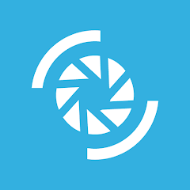
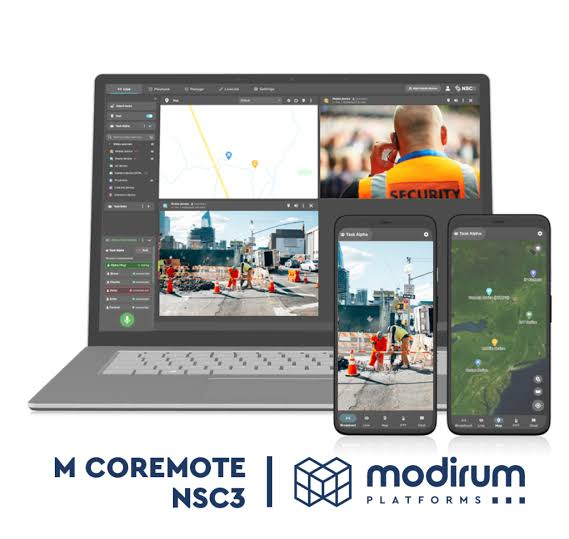

Critical communications

NSC3Context
NSC3, a real-time situational-awareness and secure-communications platform, supports control-room operators and mobile field personnel working in degraded network environments. It provides teams with a common operating picture to coordinate a response across organisations, roles and locations.

Problem
One example of the challenges operators have faced is managing a steady stream of events while remaining aware of urgent situations. Part of my work has been helping them focus on relevant activity and get time-critical information to the right recipients without adding to control-room workload.
Process
I work across Modirum Platforms’ critical communications portfolio, with a primary focus on NSC3. My design work spans the wider product experience, shaped through direct collaboration with end users, product, and engineering. Events, subscriptions, and alerts are a few examples of the product capabilities I’ve designed.
Alongside product work, I’m building the design system and an AI-first design and development process to support the team as the platform and our ways of working evolve.
Solution
My work contributes to NSC3’s broader experience for situational awareness and team coordination. For example, users can create subscriptions around event parameters relevant to their work and manage matching events in the event feed. When an urgent event occurs, the platform can send near-instant alerts to relevant recipients.
Impact
Customers have used NSC3 to reduce routine monitoring effort, leaving operators more capacity to act on urgent developments in public-safety and other mission-critical operations.